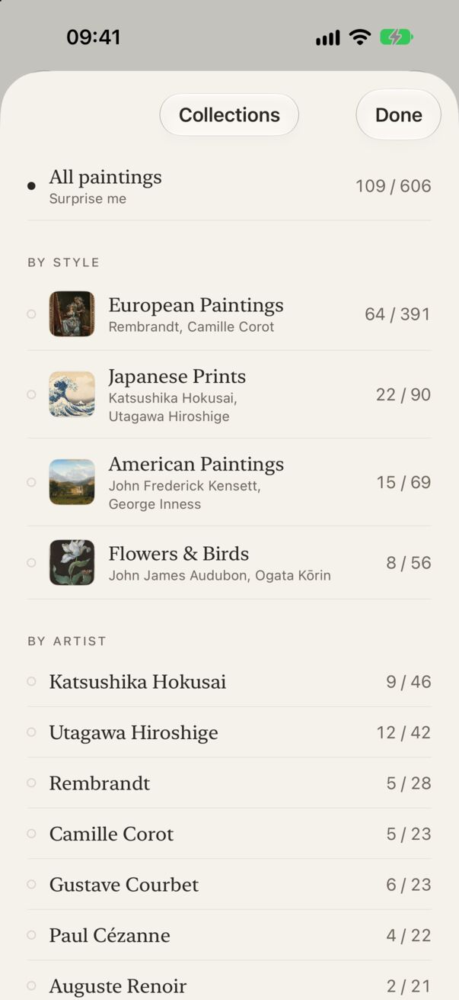

Escolha uma coleção
- Na tela inicial, toque no cartão abaixo de Focar com (no início, ele mostra Todas as pinturas).
- Escolha uma coleção. Cada linha mostra quantas obras dela você já revelou, como 22 / 90.
- Toque em OK. Suas próximas sessões escolhem apenas dessa coleção, até você mudá-la.

Por estilo
- Pintura europeia: Rembrandt, Vermeer, Van Gogh, Cézanne, Corot, Courbet, Manet, Renoir, Degas e outros.
- Gravuras japonesas: Katsushika Hokusai, Utagawa Hiroshige e outros mestres dos períodos Edo e Meiji.
- Pintura americana: paisagens da Escola do Rio Hudson, de Kensett, Inness, Church e outros.
- Flores e pássaros: John James Audubon, Ogata Kōrin e mestres da ilustração botânica.
Por artista e por época
Abaixo dos estilos, a janela lista os artistas com várias obras no Easel e as épocas, do Renascimento ao Moderno (a partir de 1880). Escolha uma para passar uma semana com Hokusai, ou um mês no século XIX.
Como as pinturas são escolhidas
Todas as obras estão em domínio público e vêm da coleção Open Access do The Met. A seleção privilegia obras célebres e é feita para ser tranquila e adequada para todos: o Easel nunca escolhe uma pintura ao acaso em todo o acervo do museu.